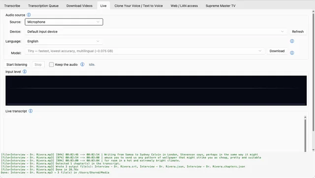
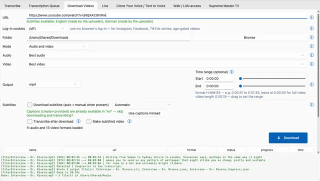
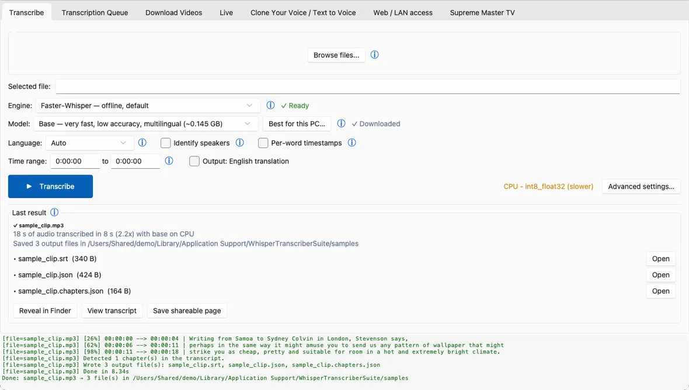

00:00:04,120 → 00:00:06,880
Your audio stays on your computer.
Free, open-source transcription that runs Whisper on your own computer — Windows, macOS and Linux.
Transcription runs on your computer; the two cloud backends are opt-in.
Drop audio or video. Auto language, speaker labels, word timestamps, time-range clipping.
Batch jobs with live progress. Pause, resume, cancel, re-run or remove any row.
Any yt-dlp site. Pick a format, clip a range, grab subtitles, transcribe when done.
Microphone or system audio, transcribed as it happens — cuts on natural pauses.
Optional, offline: clone a voice from a short sample and have it read new text.
Play one live stream as a full-screen grid, optionally across monitors.
One button turns this machine into a transcription page for the phones and PCs on your network.
The model runs in a worker process on your computer. Your audio never leaves it.
audio or video,
or a yt-dlp URLqueues the job,
shows progresskeeps the model
in memoryfaster-whisper,
whisper.cpp, Parakeettranscript next
to your filenewline-delimited JSON over stdin/stdout · per-worker token + heartbeat
Sound in.
Text out.
Free, open-source Whisper transcription on your own computer. Windows · macOS · Linux.
whisper-transcriber-suite.pages.dev